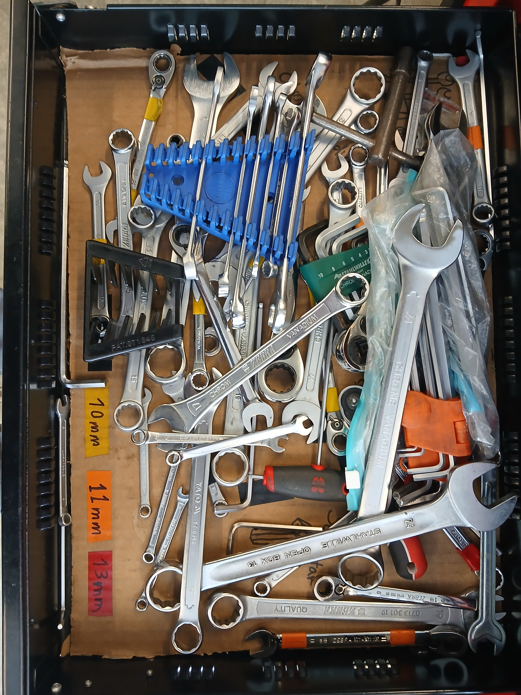
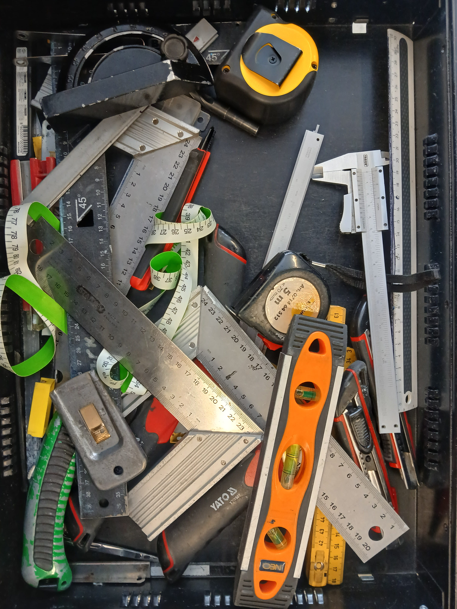

Lokaverkefni


Markmiðið í þessu verkefni var að nota Shop Bot til þess að fræsa út eitthvað nytsamlegt. Ýmis efni voru í boði, t.d. 18mm greni krossvigur, OBS og annað sem nemendur gátu skaffað. Forrita þurfti toolpath fyrir shop bottinn auk þess sem ákvarða þurfti hvaða biti gæti hentað, snúningshraða bitans og færsluhraða fræsins.
Hugmyndin
Þessi hópur ákvað að nota þeta tækifæri til þess að bæta skipulag í verkfæraskúffu Team Spark. Hugmyndin var að takmarka fjölda hluta sem áttu heima í hverri skúffu fyrir sig og gera augljóst hvaða verkfæri ætti að vera í hverri skúffu. Þetta hjálpar mikið í skúr sem margir hafa aðgang að og ekki allir vita hvaða skipulag á við án þess að það sé gert augljóst. Niðurstaðan var að búa til mót fyrir hillurnar þanni að mikilvægustu verkfærin eigi sér sinn heimastað og nýta Shop Botinn til að framleiða þetta mót.


Efni
Fyrsta spurningin sem þurfti að svara var hvaða efni ætti að nota. Hvorki krossviður né OBS hentuðu neitt sérstaklega vel. Ljóst var að besta lausnin væri einhver svampur, t.d. EVA eða PU svampar. Spurningin var hvort hægt væri að finna eitthvað viðeigandi hérna á Íslandi. EVA foam reyndist erfiðara að finna en hópurinn hélt upprunalega, a.m.k. í þeirri stærð sem leitast var eftir. En það kom ekki að sök því í staðinn fann hópurinn enn betri kost, svokallaðan Kaizen verkfærasvamp sem fæst hjá Ísvit á sanngjörnu verði. Þessi Kaizen svampur er svartur á yfirborðinu en fæst í mismunandi litum að innan, svo þegar fræst er í hann þá sést mjög vel í formið sem fræst var út. Hópurinn valdi 30mm rauðan Kaizen svamp fyrir þetta verkefni.

Að teikna upp verkfærin
Þegar búið var að finna efni var hafist handa við að ákveða hvaða verkfæri fengu að fara í skúffurnar og hvernig þeim yrði stillt upp. Síðan voru öll verkfærin mæld: lengd, breidd og þykkt. Þau verkfæri sem höfðu flóknari form en bara rétthyrning voru síðan myndum á hvítum bakgrunni. Hópurinn notaði Inkscape til þess að útbúa vigurmyndir af öllum þessum verkfærum. Fyrst var myndunum hlaðið upp í Inkscape, síðan var 'trace bitmap' tólið notað til þess að búa til vigurmynd af verkfærinu. Þetta virkaði ekki alltaf eins og vel og vonast var eftir. Vigurmyndirnar sem fengust með þessu voru oft risjóttar og ónákvæmar, t.d. vegna þess að myndavélin var ekki fullkomin.
Þessar vigurmyndir voru því bættar handvirkt, punktar sem sköpuðu svæði utan eða innan megin skuggamyndarinnar voru teknir út svo útkoman væri eitt heilstætt form þó einnþá með óþarflega mörgum punktum. Loksins var simplify tólið í Inkscape notað til þess að fækka punktum og einfalda ferilinn. Niðurstaðan var yfirleitt góð en ekki alltaf fullkomin. Þessum skuggamyndum var síðan raðað upp í Inkscape og fingragötum bætt við svo auðvelt sé að ná verkfærunum upp úr svampinum.
Að Skilgreina Toolpath í Fusion
Verkfæra útsetningin var vistuð á svg formi og tekin þannig inn í Fusion. Þar var viðeigandi dýpt bætt við verkfæri og fingragöt. Fusion var síðan notað til þess að skilgreina ferilinn. Hópurinn skoðaði önnur verkefni á netinu sem notuðu sama svamp og fundu bita sem átti að virka ágætlega fyrir Kaizen svamp. Þetta var tvíflaut, 'flat end' biti með þvermál 0.25 fet. Almennt fékk hópurinn það út að tegund bita væri ekki aðal málið, frekar hvort hann væri nógu beittur eða ekki. Ein heimild gat þess að snúningsátt bitans miðað við færslu gæti haft miklar afleiðingar á niðurstöðurnar.
Í fyrstu fræsingu voru 1200 rpm notuð og 0.125 í stepdown. Strax sást að fræsirinn náði ekki hreinum skurði í gegnum svampinn, í staðinn varð hann tættur og ljótur. Prófað var að auka snúningshraðann upp í 1600 rpm og niðurstöðurnar skánuðu eitthvað við það, en fræsibitinn hélt áfram að tæta frekar en að skera svampinn.

Fyrir seinni fræsingu var prófað að skipta um bita auk þess sem prófað var að breyta snúningsátt bitans m.v. keyrslustefnu. Þetta reyndist gera gæfumuninn og svampurinn tættist mun minna, hópurinn telur að sú breyting sem hafði mest áhrif var snúningsátt bitans miðað við færslustefnu og mælir með því fyrir alla sem ætla að fræsa í mjúkt efni eins og svamp að taka sérstaklega vel eftir snúningsátt bitans og breyta mögulega 'default' stillingunum. Hérn er youtube myndbandið sem bjargaði okkur: https://www.youtube.com/watch?v=oTDb038sic8